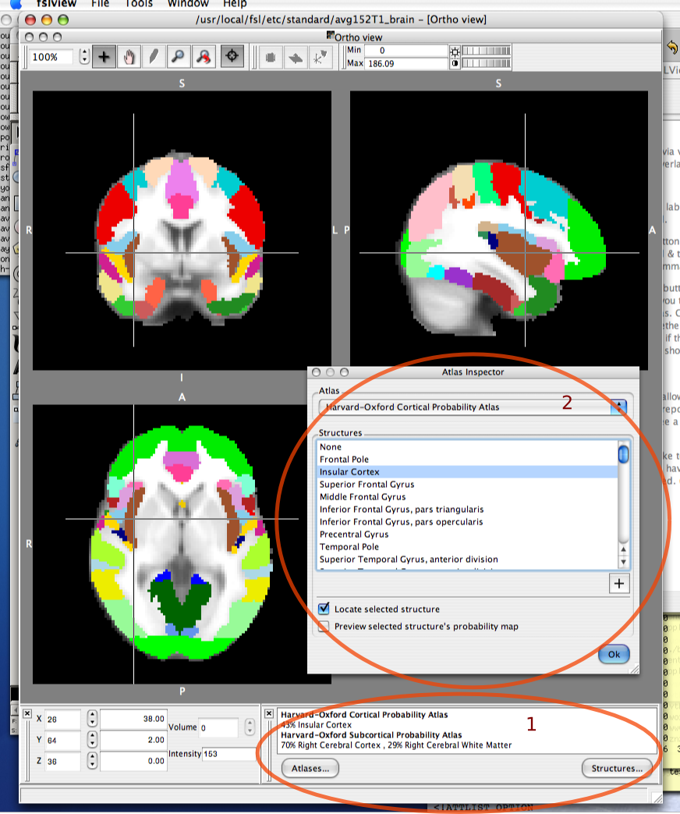

These tools provide feedback via various atlases included in the FSL/FSLView distributions. Labels from selected atlases can be displayed, summary images overlaid, structures located and single structure probabilty maps shown.
Most of the atlases are probabilistic, which means that each structure in the atlas is represented as a standard space image with values from 0:100, according to the cross-population probability of a given voxel being in that structure. You can view individual structures' probability images via the Structures... button. In addition, each probabilistic atlas has been reduced to a single summary image for ease of display, where each voxel is colour-coded according to the most-probable structure; these images can be turned on via the Atlases... button.
|
The "Atlas tool"(1). If it's not visible then select "Tools"->"Toolbars"->"Atlas tools" from the main menu or right click in the toolbar region and select "Atlas tools" from the pop-up menu. The "Atlas selection dialog"(Not shown): allows you to select which atlases to report labels from and which, if any, summary views to diplay. The "Atlas inspector dialog"(2): browse an atlas by anatomical region, including preview of underlying probability map and jump to region. |
 |
See here for reference details, incl. file formats and XML specifications.